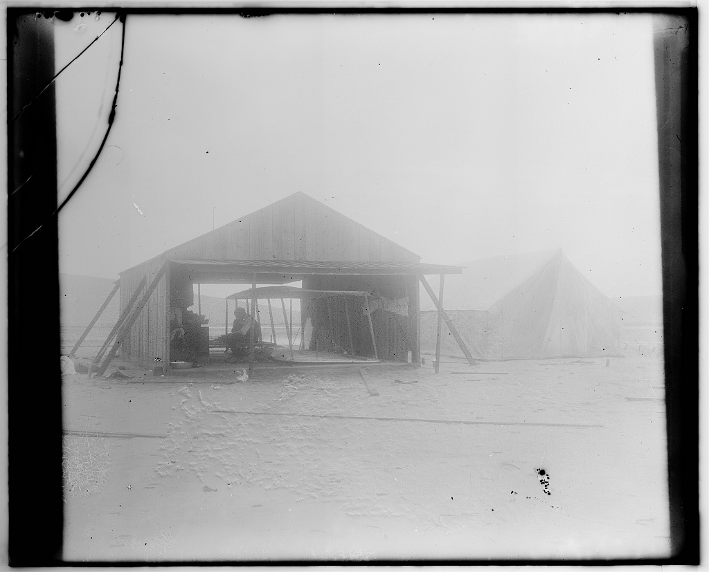
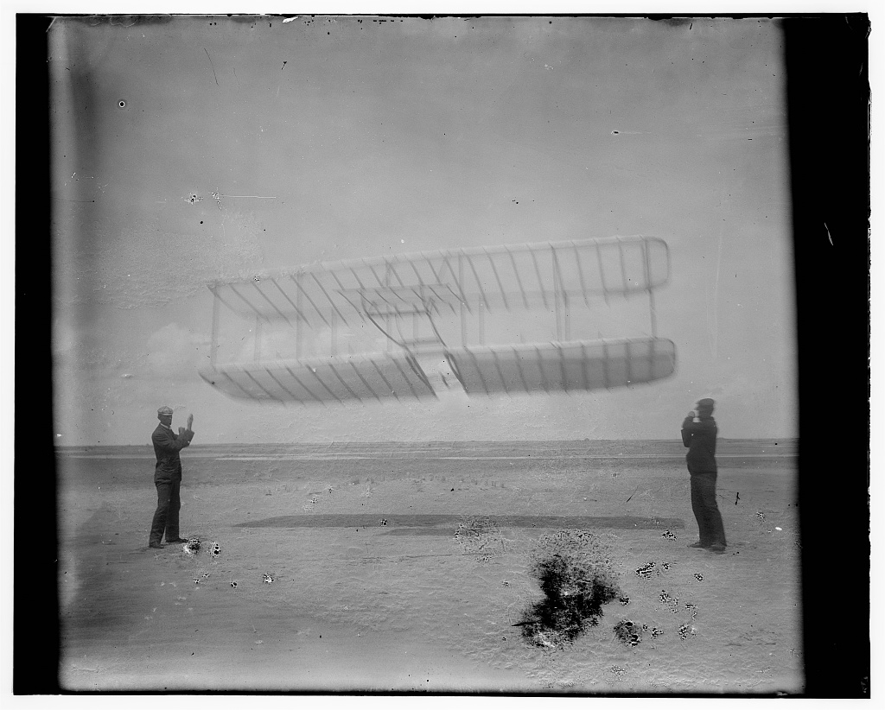
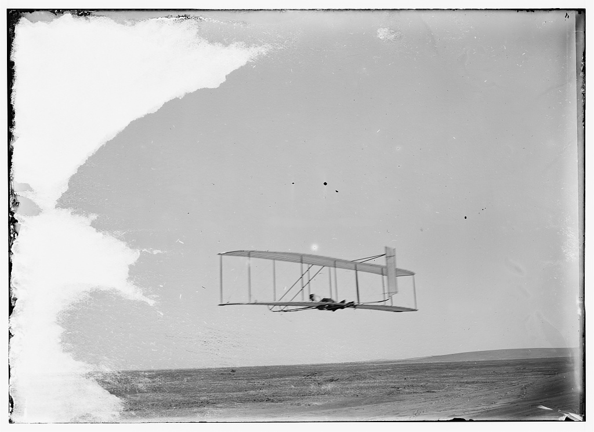
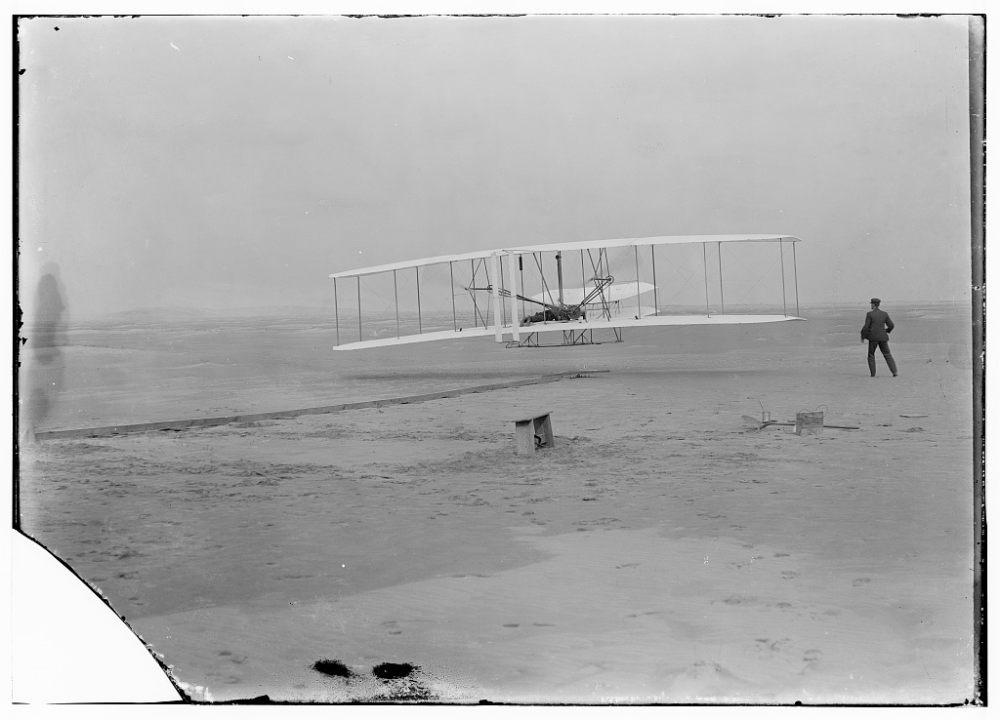

Wilbur Wright (1867–1912) and Orville Wright (1871–1948) ran a bicycle business in Dayton, Ohio. Repairing and building bicycles gave them practice with tools, lightweight structures, and balance. They studied earlier flight research, including Otto Lilienthal’s gliders, and exchanged ideas with engineer Octave Chanute.
They traveled to North Carolina’s Outer Banks for steady winds and sandy landing areas. When their wings lifted less than expected, they questioned their data and built a small wind tunnel. Mechanic Charlie Taylor later helped by building the engine. Flight was a shared achievement, built on other people’s work.
Select any historical photo to enlarge it and read its caption.

Build, test, rebuild · 1901. The brothers rebuild their glider at Kitty Hawk. Look for the exposed framework: a lightweight structure still needed strength to withstand flight. What does this photograph reveal about their workshop?Wright brothers photograph collection, Library of Congress. Public domain; no known restrictions on publication. Original photograph and catalog record.

Test before carrying a pilot · 1901. Wilbur (left) and Orville (right) fly the glider as a kite. Wind can produce lift without an engine. Compare this test with the powered Flyer below: what changed, and what stayed similar?Wright brothers photograph collection, Library of Congress. Public domain; no known restrictions on publication. Original photograph and catalog record.
Watch: an invention built from experiments
Smithsonian National Air and Space Museum · Discuss: why do lift, power, and control all matter? What did the fourth flight demonstrate that a brief hop could not? Museum source.
1899 · Try a small model. A kite tested wing-warping: twisting the wings to change their lift.
1901 · Measure instead of guessing. Wind-tunnel tests compared model wings after disappointing glider results.
1902 · Learn to steer. A movable rudder worked with wing-warping to improve glider control.
1903 · Add power. An engine and two propellers made sustained powered flight possible.
1905 · Make flight practical. Continued redesign produced an aircraft that could fly repeated turns and stay aloft much longer.
The angle of attack is the angle between a wing’s reference line and the oncoming airflow. Predict what happens to lift when that angle becomes very large. Then test three angles while keeping airspeed fixed.
Teaching model, not measurements of the Wright Flyer. The stall angle varies with wing shape and conditions. Airflow lines show direction, not a computed flow field.
Relative lift
Relative drag
Flow state
Make a prediction, then record tests at 6°, 12°, and 20°.
Your test notebook (maximum 6 trials)
Trial
Angle
Airspeed
Lift
Drag
What explains the pattern?
A wing changes the airflow, producing pressure differences and deflecting air. Increasing angle can increase lift, but beyond a critical angle the flow separates strongly: the wing stalls and lift decreases. Stall depends on angle of attack, not simply on whether the nose looks high.
In this model, doubling airspeed at the same angle makes both forces four times as large. In real flight, force also depends on air density, wing area, and wing shape. An engine supplies power; the propellers use it to produce thrust. More power alone cannot solve poor control.
03 / Three ways to rotate
Staying airborne means steering
Select a motion to see the axis of rotation. These diagrams explain directions; the Flyer’s real control system linked some motions together.
Pitch: nose up or down around a wing-to-wing axis. The Flyer used a forward elevator.
Roll banks the aircraft. Yaw points the nose left or right. Wing-warping changed lift on the two sides; the rudder helped counter unwanted yaw. A banked wing tilts the lift force, helping turn the aircraft.

Learn control before adding power · 1902. Wilbur glides at Kitty Hawk; the single rear rudder is visible. Find the vertical rudder and horizontal forward elevator. They help control different rotations: yaw and pitch. This glider has no engine or propellers.Wright brothers photograph collection, Library of Congress. Public domain; no known restrictions on publication. Original photograph and catalog record.
04 / Look closely at a primary source
Twelve seconds that changed flight

December 17, 1903, near Kill Devil Hills, North Carolina: Orville pilots and Wilbur stands beside the Flyer. The rail helped launch it from the sand. Photograph by John T. Daniels, Library of Congress, public domain. Original photograph and catalog record.
Orville’s first flight covered 120 feet in 12 seconds. The brothers made four flights that day; Wilbur’s last covered 852 feet in 59 seconds. Their achievement is recognized as the first successful powered, controlled, sustained flight of a piloted, heavier-than-air aircraft. Balloons, gliders, and other aviation experiments came earlier.
Observe: find the pilot, the launch rail, and the space between the machine and the ground. Infer: what might each tell us? Question: can one still photograph prove how long the flight lasted? A photograph needs supporting evidence, such as the brothers’ records.
Before watching, enlarge the first-flight photo. Write one observation, one inference, and one question. Then compare your ideas with the museum’s account.
Smithsonian STEM in 30 · Discuss: which claims can the image support, and which need a diary or flight record? Smithsonian source.
Find both films in the Video Library by searching “Wright”.
05 / Use your evidence
What made their approach work?
Write in your notebook or use this space before printing. Entries are not saved after leaving the page.
Teacher guide & extension
5 minutes: meet the brothers and predict. 12 minutes: record three angles at one speed, then compare two speeds at one angle. 8 minutes: explain control. 8 minutes: analyze the photograph and write an evidence-based exit ticket.
Grades 4–5: use higher/lower and draw the three motions. Grades 6–9: compare controlled variables and force ratios. Extension: calculate the first flight’s average ground speed (120 ÷ 12 = 10 ft/s). Explain why a headwind makes airspeed different from ground speed.
Paper-glider challenge: change one fold, predict its effect, launch gently in a clear space, measure three flights per design, and compare averages. Keep paper, launch method, and starting height the same.